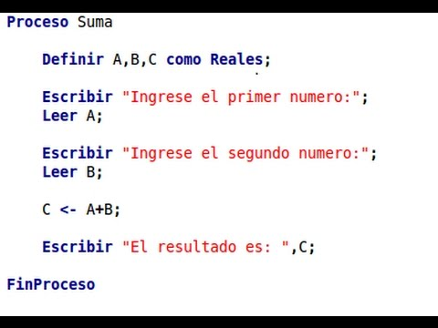
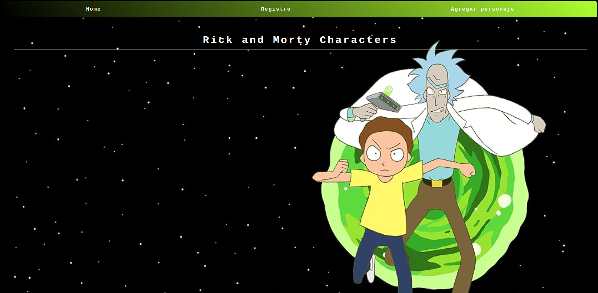

Conocimientos

El origen
Inicié mi formación en programación de manera autodidacta, analizando el código fuente de sitios web como punto de partida para comprender su funcionamiento. Esta curiosidad evolucionó hacia una decisión profesional: desarrollar las habilidades necesarias para construir soluciones de software propias.

Las bases
Mis primeros pasos comenzaron con pseudocódigo, tratando de conocer:
- Datos de entrada
- Datos de salida
- Condicionales
- Bucles
Formación
- SENA (2020–2021) · Técnico en programación
- SENA (2023–2024) · Tecnólogo en análisis y desarrollo de software
Store Managament
Sistema de inventarios construido en equipo para pequeñas y medianas empresas, como nuestra primera incursión en este mercado.

API Ricky and Morthy
Cliente que consume la API REST de Rick and Morty, implementando peticiones HTTP, paginación de resultados y renderizado dinámico de personajes, episodios y ubicaciones a partir de las respuestas en formato JSON.
[ Título del proyecto ]
[ Descripción de un tercer proyecto: qué lo hace interesante técnicamente. ]